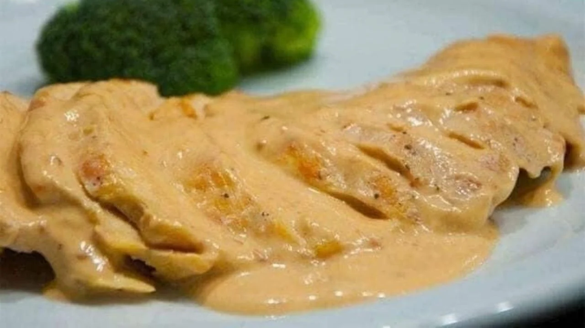
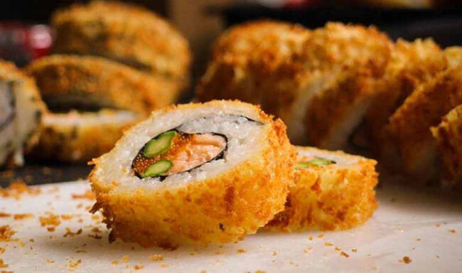
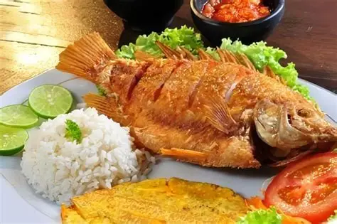
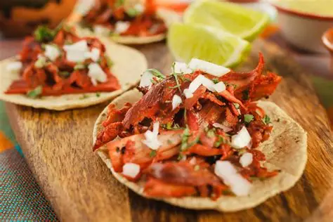

No hay platillo que me haga más feliz que unas buenas pechugas de pollo en crema de chipotle. Me fascina cómo la suavidad del pollo se mezcla con esa crema espesa, picante y ahumada que despierta todos mis sentidos. Cada vez que las pruebo, siento que estoy en casa, que todo está bien. Es mi favorito por excelencia, el que siempre elijo dentro de las recetas de mi familia.
Hay algo especial en compartir sushi con mi novia, y más cuando se trata de la pinta empanizada de Sushiroll. Es nuestro platillo de confianza, el que pedimos sin pensarlo dos veces. Me encanta cómo el crujiente del empanizado se mezcla con el arroz suave y el relleno jugoso, todo envuelto en ese sabor que ya es parte de nuestra historia. Cada vez que lo comemos, siento que estamos celebrando algo, aunque no haya ocasión.
La mojarra frita es una de mis comidas favoritas. Me encanta por su sabor crujiente, el toque casero y la forma en que siempre me deja satisfecho. Es un platillo que disfruto muchísimo. uno de los platillos que mas me encanta
Los tacos al pastor son uno de mis platillos favoritosEs un clásico que nunca falla, y siempre me hace sentir que estoy disfrutando lo mejor de la cocina mexicana.
